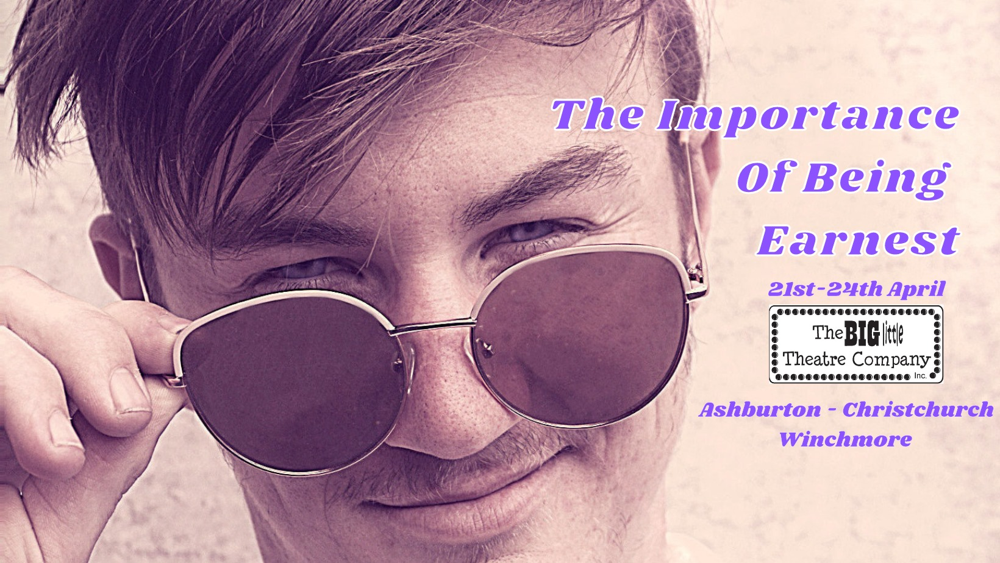

“After 10 years of gracing the Mid-Canterbury stage, you know what to expect when you walk into a show put together by the rising stars of the Big Little Theatre Company. That’s a polished, well put together and brilliantly executed performance featuring remarkable young talent”
(Ashburton Guardian, Nov 23, 2019: “A Shakespearean Masterpiece”)
The Big Little Theatre Company presents: The Importance of being Earnest
A trivial comedy for serious people
Jack is in love with Gwendolen. Algernon is in love with Cecily. Cecily is Jack’s ward. Gwendolen is Algernon’s cousin. Jack told Gwendolen his name was Earnest. Algernon told Cecily his name was Earnest. Neither Jack nor Algernon are actually called Earnest but of course Gwendolen and Cecily both think their love is called Earnest. Maddie and Morgan cant find Earnest anywhere on Instagram, someone misplaced a baby and Quin is just happy to be here.
Confused ? Good. You’ll just have to come along for a fun filled evening out to make sense of just who Ernest is and why he is so important. A Comedy of Falsehoods, wit and questionable societal norms, Big Little Theatre Company’s reimagining of Oscar Wilde’s the Importance of being Earnest will have you laughing out loud and hungry for a muffin.
Presented by The Big Little Theatre Co. Adapted and Directed by Nomi Cohen.
Performances
All Performances are at 7:30pm. Tickets are $20 Adults / $15 Child
21/04/2021: ASHBURTON EVENTS CENTRE: Book Tickets (SOLD OUT)
22/4/2021: LITTLE ANDROMEDA, CHRISTCHURCH: Book Tickets (SOLD OUT)
24/04/2021: WINCHMORE HALL: Tickets Recommended - Limited Door Sales Available. Tickets Available Here
About the Director
Since graduating from the National Academy of Singing and Dramatic Art (NASDA) with a Bachelor of Performing Arts in 2012 and The Actors’ Program in 2013, Nomi Cohen has worked on numerous projects both on and off the stage. In 2016, Nomi co-wrote and starred in Hungover, a musical comedy, with director Hamish McGregor which had a successful season at the Basement Theatre in Auckland. She then went on to direct BRAVADO! for Auckland Theatre Company as part of the 2016 Next Big Thing festival. More recently, Nomi was the Assistant Director of NASDA's The Book Of Everything and has mentored and directed several artists through the process of writing and producing a solo cabaret show. As an actor, her Court Theatre credits include Much Ado About Nothing; Legally Blonde the Musical; Chicago and Jesus Christ Superstar and Jersey Boys. Other theatre credits include Lysistrata (Auckland Theatre Company) and Catch Me If You Can the Musical (Blackboard Theatre Collective). Nomi is the creator of several cabarets and her own arts themed pub quiz 'What The Quiz Is This?!' which had a very successful run in the 2021 Backyard Buskers Festival. She has also worked in Television production for Jono and Ben, Family Feud and What Now! Nomi is a proud co-founder and co-director of Blackboard Theatre Collective and hopes to continue to bring top quality musical theatre entertainment to New Zealand.